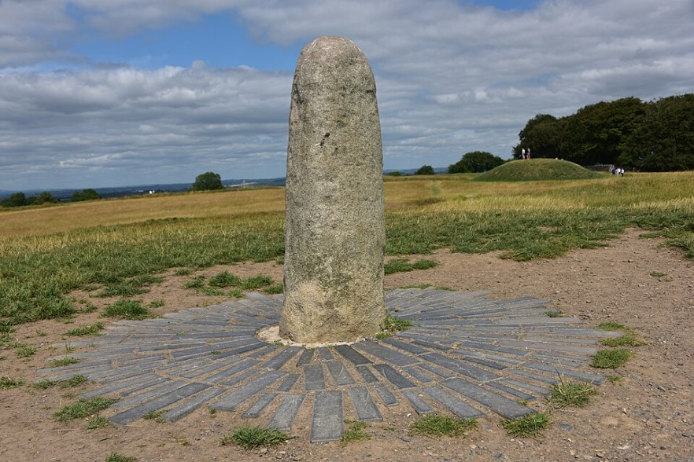

THE STORY OF WORRY STONE / VOL. 01
고요한 돌무더기
The Legend of Lia Fáil

아주 오래전, 아일랜드에는 신비로운 돌 하나에 관한 전설이
전해졌습니다.
그 돌의 이름은 '리아 파일(Lia Fáil)'
진정한 왕이 될 자가 다가오면 울음소리를 내어
그를 알아본다는, 운명의 돌이었습니다.
안개가 짙게 내려앉은 어느 언덕 위에도
커다란 돌 하나가 있었습니다.
어느 날, 왕이 되고 싶은 네 사람이 돌을 찾아왔습니다.
기사는 자신의 힘을, 귀족은 화려한 혈통과 부를,
탐험가는 용기를, 학자는 뛰어난 지혜를 내세웠습니다.
그들은 모두 자신이 선택받을 자격이 있다고 믿었습니다.
하지만 돌은 아무런 대답도 하지 않았습니다.
아무리 소리치고 자신의 능력을 증명해 보여도,
돌은 그저 고요할 뿐이었습니다.
결국 화가 난 사람들은 돌을 발로 차고 하나둘 떠나갔습니다.
그리고 마지막으로, 평범한 소년 하나가 언덕을 찾아왔습니다.
소년은 자신이 누구인지 설명하지도,
돌에게 무엇을 요구하지도 않았습니다.
그저 조용히 다가가 돌을 쓰다듬으며 곁에 머물렀습니다.
얼마나 시간이 흘렀을까요.
오랫동안 침묵하던 돌에서 작은 울림이 들려왔습니다.
이윽고 돌은 은은한 빛을 내기 시작했고,
소년에게 작고 소박한 돌 하나를 건넸습니다.
소년은 아무 말 없이 그 돌을 두 손으로 받아 쥐었습니다.
BEYOND THE FIRST LOOK.
우리는 종종 눈에 보이는 모습만으로 누군가를 판단합니다.
하지만 진짜 모습은 겉으로 드러난 것보다,
조금 더 가까이 다가가 오래 머물렀을 때
비로소 발견되기도 합니다.
당신이 손에 쥔 작은 워리스톤도 마찬가지입니다.
누군가를 쉽게 판단하려는 순간,
이 돌을 천천히 만져보세요.
어쩌면 당신이 아직 발견하지 못한
또 다른 모습이 있을지도 모릅니다.
The Other Side — SIDE B